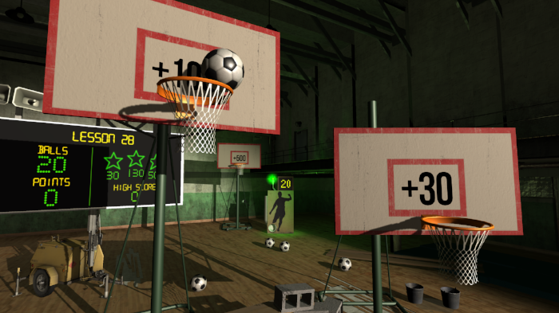

Headmaster Launch Week Updates!

Hi this is Ben, CEO of Frame Interactive. After nearly two years of intense work by our small team, Headmaster was released on Playstation VR launch day, October 13, to some really positive press.
- We Got This Covered Headmaster Review
- Playstation Lifestyle Headmaster Review
- The Best Playstation VR Games So Far - Paste Magazine
- 8 Playstation VR Games You'll Want To Show Your Friends - Rolling Stone
But we're not done...
Headmaster UPDATE 1.05 IS LIVE
As people have been playing, we've been updating the game at a furious pace, tackling some very important issues. Overall the game is now MORE STABLE and LESS FRUSTRATING to progress through.
- Fixed a crash when running the game in non-English languages
- Fixed a crash when picking up the Tablet Computer at JUST the wrong/right time.
- Made Exam 2 passable even by a non-developer! :)
- Reduced the number of stars required to take Exams. This should allow more players to finish the game and see all of the surprises after Exam 2 and 3.
- Made Lesson 21 (the one where the keeper blocks your shots) a little clearer in its goals. Hint - go for the side targets first!
- Made the 1000 point basketball hoop in the gym actually award 1000 points. Oh the heartbreak.
If any of these items affected your experience in the first few days it would be worth having another look at Headmaster. Version 1.05 was posted today 20 October and contains all of the above fixes.
We've also been active on Reddit's r/psvr subreddit, and have started our own subreddit, r/headmastergame. We'll continue to post in there and update this blog as well.